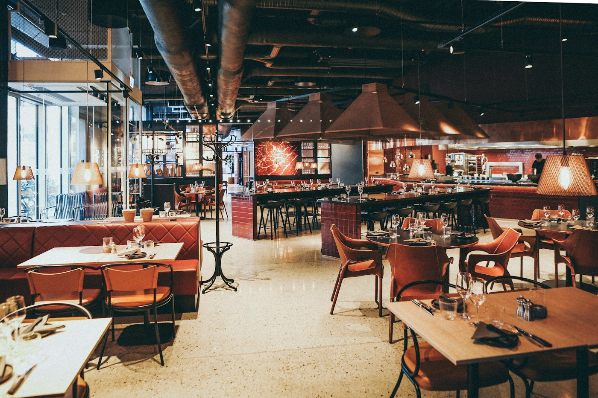
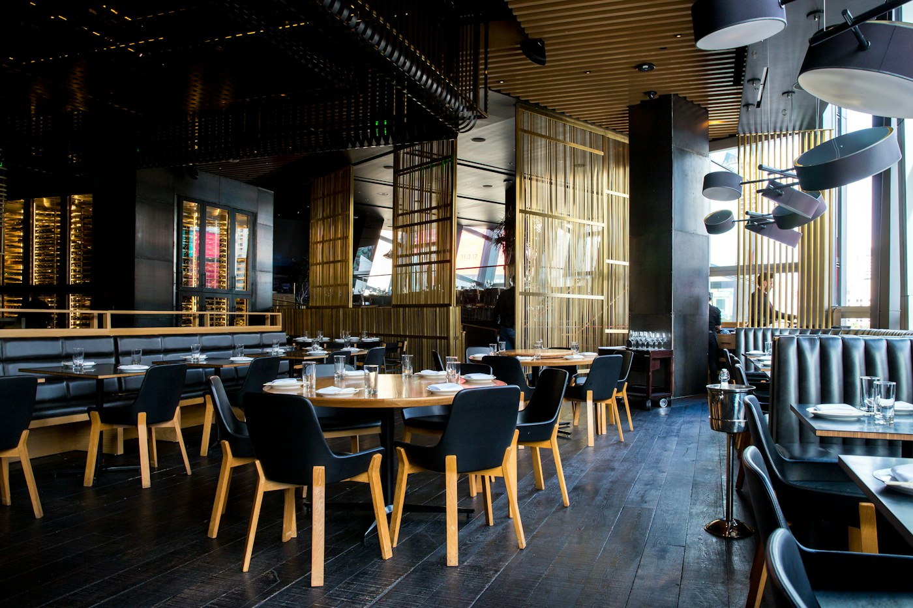
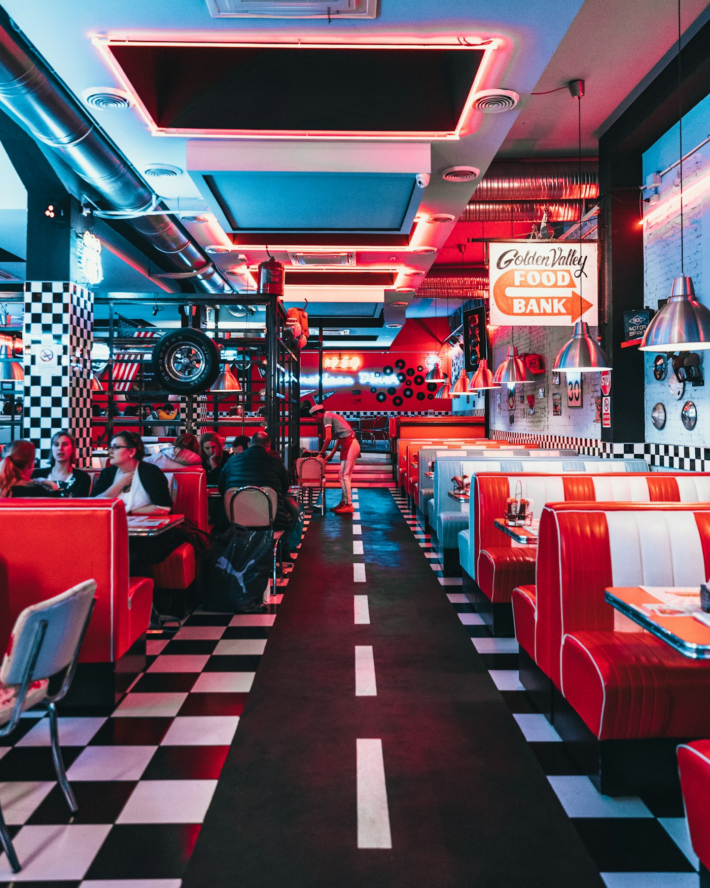
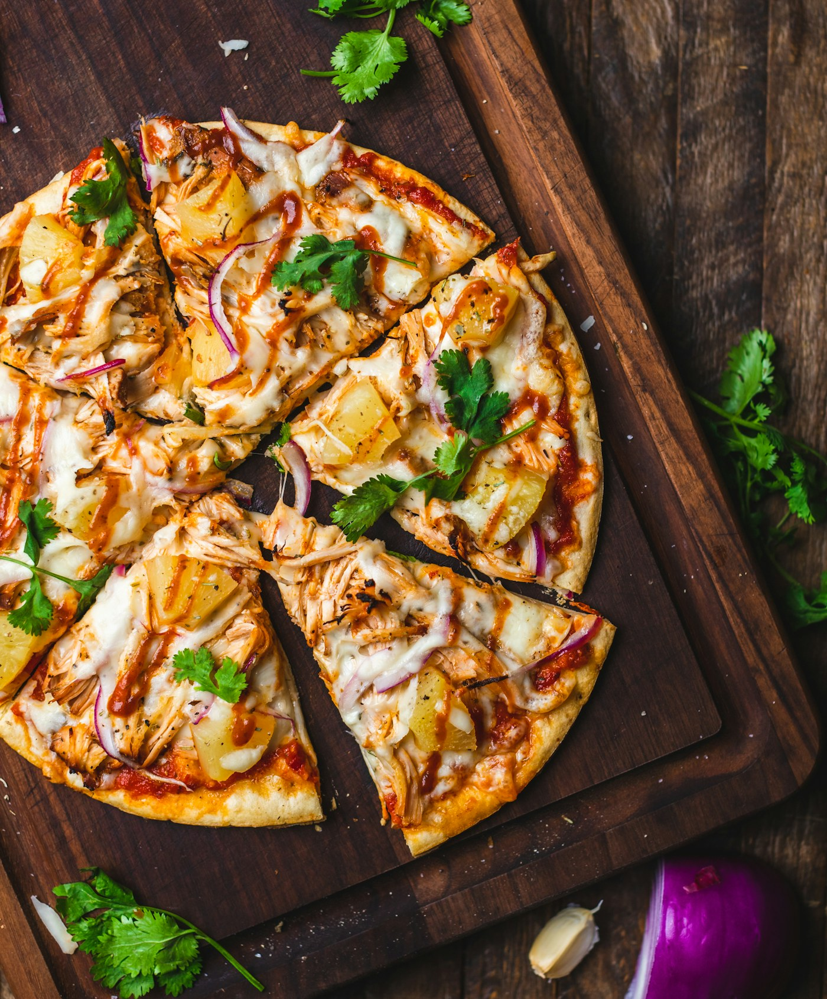

THE DINING EDIT✳ INDEPENDENT CREATIVE STUDIO INDIA · EVERYWHERE
Make them
look twice.
Websites, films, and visual worlds for restaurants and ambitious brands with something good to show.


01 / CREATE
GOOD TASTE
LOOKS GOOD.
LOOKS GOOD.
✳
✳
ART DIRECTION / DIGITAL / MOTION
SCROLL TO EXPLORECREATIVE THAT STAYS WITH YOU
01 / THE STUDIO
We turn good taste into a lasting impression.
Steinx brings design, motion, and storytelling together. For a new restaurant opening or a brand ready for its next chapter, we make the experience feel as considered online as it does in person.
02 / SELECTED WORK
Made to be
seen.
A few directions our studio can take. Explore the visual ideas, then imagine what we can build around your story.

EVERY FRAME COUNTSSTEIN-XLearn it.
Drill it.
Ace it.COURSES / PRACTICE / MOCKS
Drill it.
Ace it.COURSES / PRACTICE / MOCKS
Restaurant visuals above illustrate creative directions; they are concept studies, not client case studies.

THE FEELING MATTERSFrom the first
03 / 05From the first
frame to the
first table.
People choose with their eyes. We make every visual touchpoint feel like an invitation.
Let's make something ↗03 / WHAT WE DO
One studio.
Every angle.
The right mix of craft to make your brand feel as good on a screen as it does in real life.
Websites & digital
Distinct, responsive websites that give visitors a reason to stay and a simple way to take the next step.
Video editing & motion
Food films, short-form edits, and motion that make every second earn its place.
Creative direction
A clear visual idea that connects your website, content, and campaign into one memorable world.
04 / YOUR TURN
Got something
good cooking?
Tell us what you’re making. We’ll help you make it impossible to ignore.